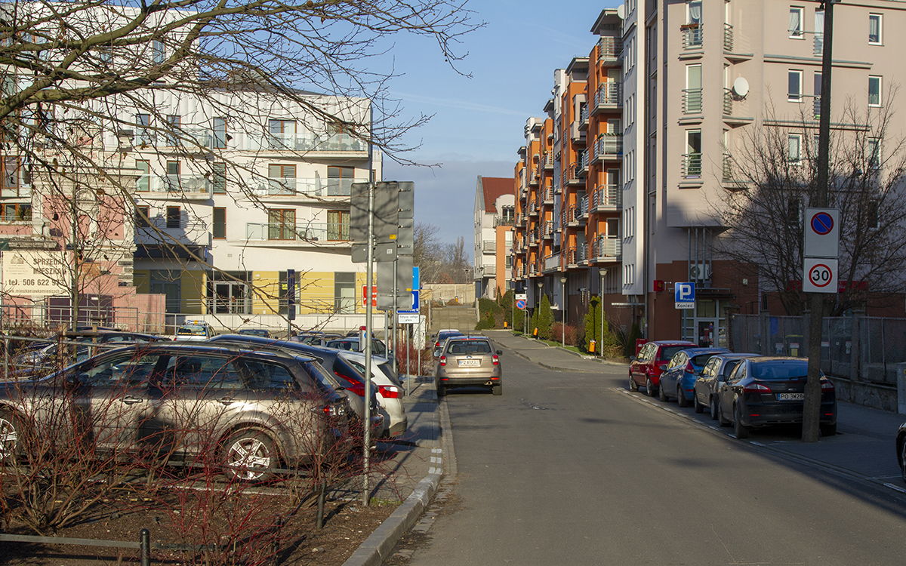

#1 - Ulica Piaskowa

Ulica Piaskowa znajduje się kilkanaście metrów na północ od skrzyżowania z Małymi Garbarami i Estkowskiego.
Nazwa ulicy wzięła się stąd, iż znajdowała się ona na terenie suchym (w przeciwieństwie do otaczających ją dawniej Łąk Dominikańskich). Została wytyczona i otrzymała nazwę Sandstrasse w pierwszej połowie XIX wieku. Nazwę w brzmieniu polskim (ulica Piaskowa) nadano 16 czerwca 1919 r.